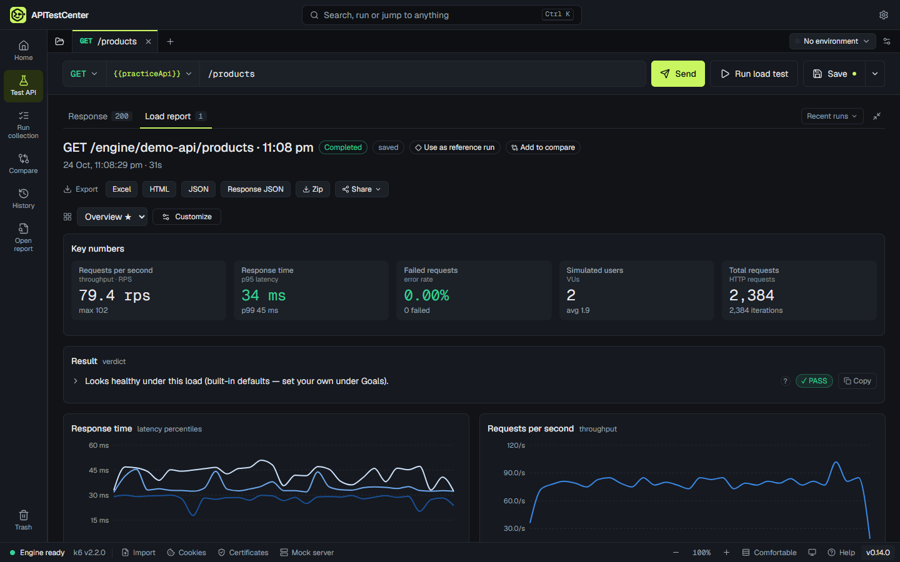
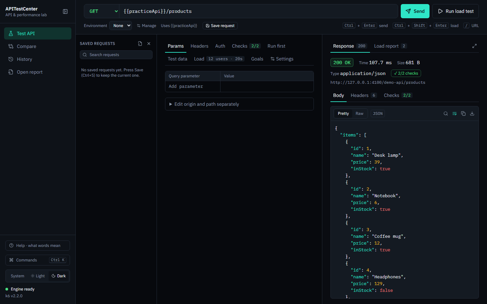
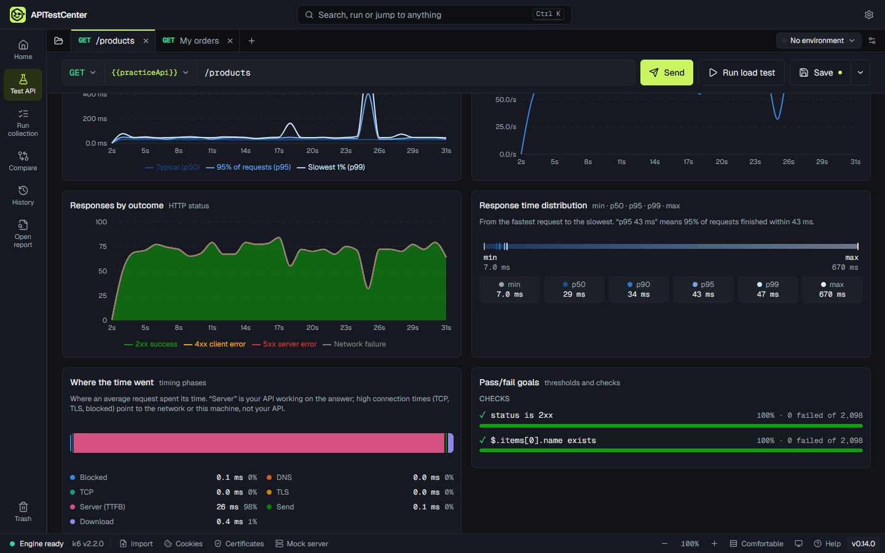
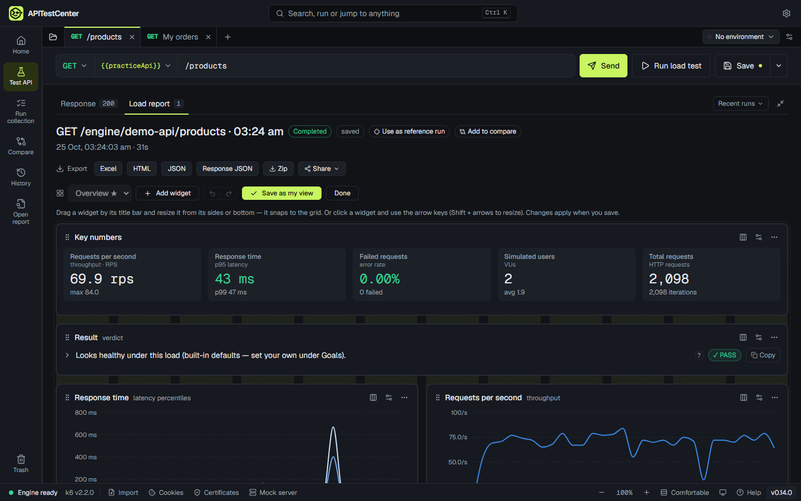
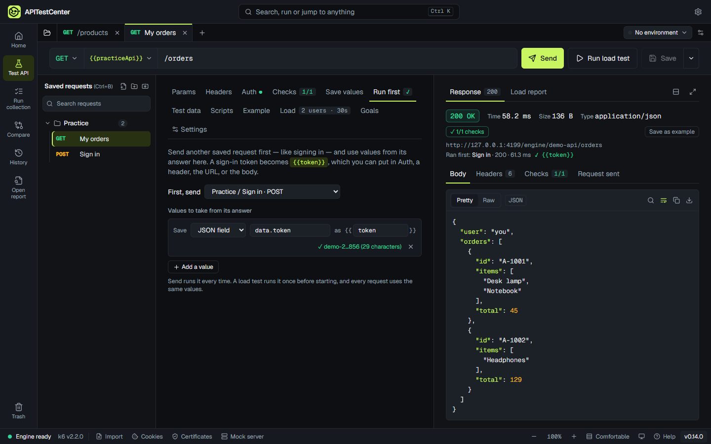

Answers in plain words
“Meets your goals under this load” instead of a wall of numbers. Every term has a plain name, with the technical one beside it.
Send a request, run a load test, and get a plain-language answer: is your API fast enough, and will it hold up? No scripts to write, no account, and your tests never leave your computer.
Version 0.2 · Windows 10 and 11 · Free

Load tests run on k6, the open-source load-testing engine — packaged inside the app, nothing to install or configure.
Built for developers and testers — and readable by everyone else on the team.
“Meets your goals under this load” instead of a wall of numbers. Every term has a plain name, with the technical one beside it.
Paste a URL or a curl command, check the answer, then run it with hundreds of simulated users — same request, one click.
20 charts and numbers to choose from. Drag, resize, and save your own views — one for developers, one for managers.
Sign in first and reuse the token, feed in users or IDs from a CSV file, set pass/fail goals, and check every answer is correct.
Every run is kept. Pick a reference run and later runs show the change. Compare several APIs side by side under the same load.
Runs from your computer, so it reaches localhost and internal APIs. Results are plain files you own; saved secrets are encrypted.
New to load testing? A built-in practice API and a one-minute tour get you started safely.
Paste a URL — or a whole curl command from your browser — and press Send. Add checks like “status is 200” or “has a name field” so a fast-but-wrong answer still fails.

Choose a preset — smoke, average day, stress, spike, or soak — or set your own users and duration. Watch response time and requests per second live.

Get a plain result first, then the detail. Rearrange the report into your own view and export it as Excel, HTML, or JSON — or email a summary.

Most real APIs need a token. Pick your sign-in request under Run first, choose the value to keep, and use it as {{token}} — on Send and for every request of a load test.

Free for Windows 10 and 11 (64-bit). No account, no sign-up.
Installs for your user account with a Start menu shortcut. Recommended.
Download installerA single file that runs without installing — handy on locked-down machines.
Download portableWindows may say “Windows protected your PC”. That happens with new apps that are not yet code-signed. Choose More info → Run anyway. Signing is on the way.
macOS and Linux versions are planned. All releases and notes
Yes. Sending requests, load tests, reports, history, and the command line are free. A paid Pro edition with extras for teams may come later; the free features stay free.
No. Requests go straight from your computer to the API you are testing. Results are saved as plain files on your computer, which you can open, move, or delete. The app has no account and collects no usage data. See the privacy page.
Yes — because the app runs on your computer, it reaches anything your computer can: localhost, VPN, and internal services. Online load-testing services cannot.
Open the app and choose “Try a simple request”. It uses a small practice API built into the app, so you can learn without touching a real system. The one-minute tour and the Help panel explain every term in plain words.
Up to 500 simulated users, or a fixed rate of up to 100,000 requests per second — limited mostly by your computer and network. The report shows when the machine itself was the bottleneck.
Yes. The atc command runs a saved request's load test without the window and writes JUnit, JSON, or HTML reports. It exits with an error when a goal is missed.
Only test systems you own or have permission to test. A load test is real traffic; against someone else's API it can look like an attack.
Open an issue on GitHub or email support@apitestcenter.com. For anything else — feedback, partnerships, press — write to hello@apitestcenter.com.